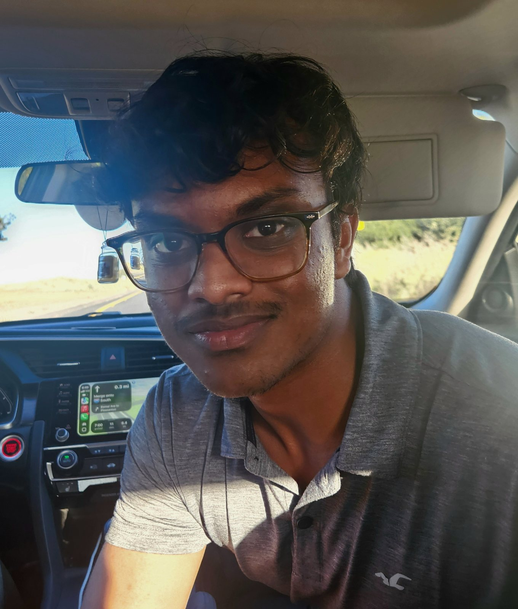
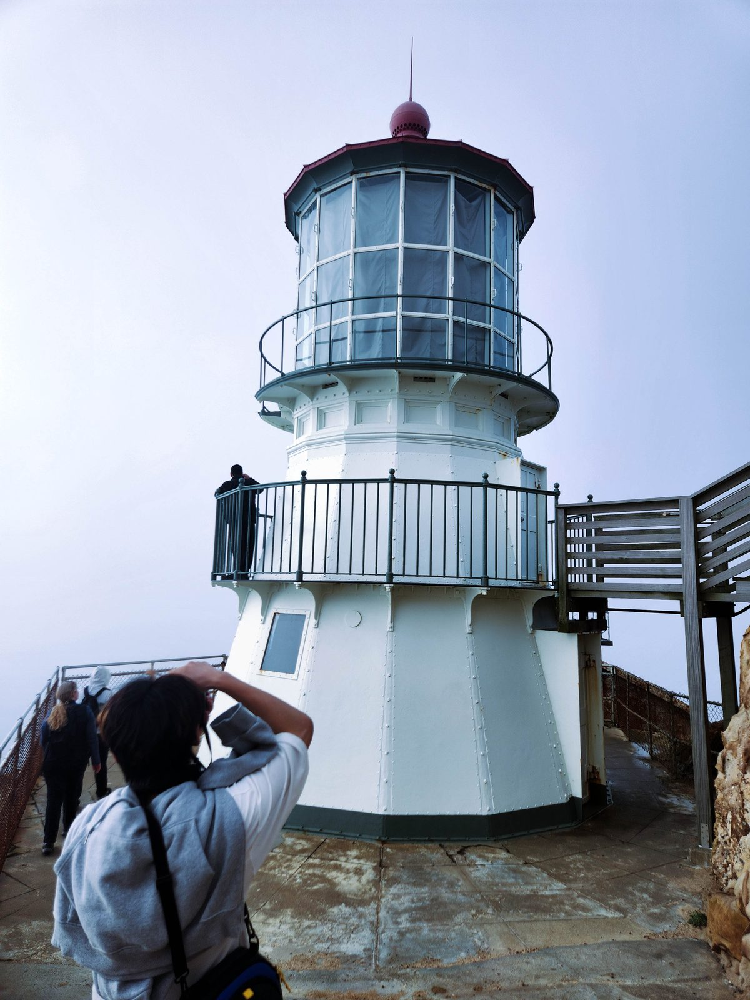

Self Portrait + Artist Statement
My approach to photography.
I work with digital photography using both smartphone cameras and professional DSLR cameras. My focus is mainly on minute details, whether they appear within large landscapes or smaller subjects. My photography shares how I see details, color palettes, textures, and shapes in my head, along with my perspective on what feels visually interesting or unusual.
When taking photos, I try to find colors that work together throughout the frame, and I usually edit with one or two main colors in mind. Most of the time, I lean toward finding contrasting colors.


Favorite Image
Lighthouse
This is my favorite picture from the year because the lighthouse feels calm, structured, and visually unusual. I like how the frame uses soft light and muted color to make the shape of the building stand out without making the image feel too busy.